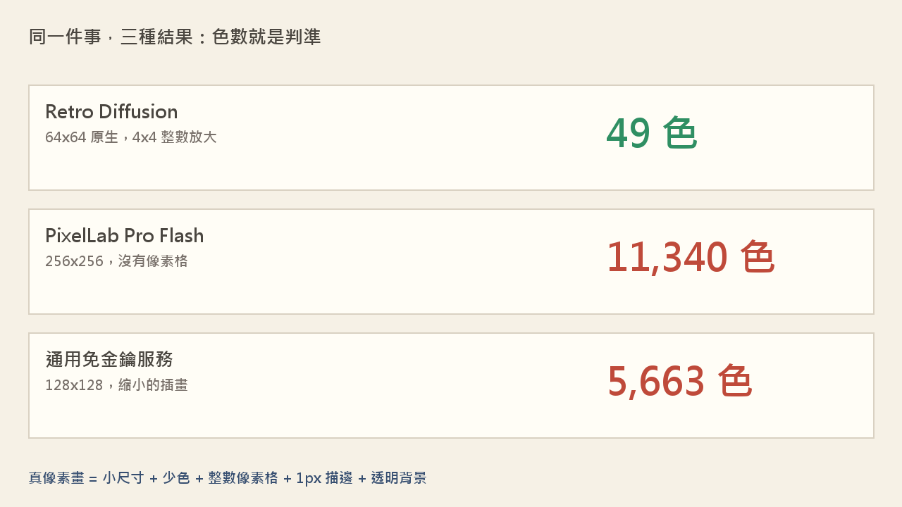

← 回 AI 助理實測
← 回影片索引
AI 生的圖，是不是真像素畫？
我量三個數字就知道
同一句提示、同樣要 64×64、同樣要求去背——結果是 49 色 對上 11,340 色
2026/09/25・文章＋影片
影片看不方便的話，也可以到 YouTube 上看
一句話說完：我做一個三國題材的像素小遊戲，第一個卡點不是遊戲怎麼寫，而是「AI 生的圖到底能不能用」。
用眼睛看，我只能說「不像」，說不出哪裡不對；改成量三個數字之後，答案五分鐘就出來了。
這篇把量測方法、三家的實測數據、以及我自己踩到的最大坑寫下來，程式碼可以直接複驗。
一、為什麼用眼睛吵不出結果
- 我先用免費的通用生圖服務，請它畫「8-bit 像素畫、限制調色盤、1 像素描邊」。圖回來了，很美——但我盯了很久只覺得「不像」。
- 我接著改了十幾個版本：換提示、換尺寸、把 AI 的底圖降階成像素、自己做調色盤量化、自己描邊。每一版我都只能說「還是怪」。
- 問題不在我眼力差，而是我沒有一個可以驗收的標準。「像不像像素畫」是形容詞，不能當驗收條件。
踩坑的具體症狀：把寫實／繪畫風的 AI 底圖「降階成像素畫」——用降採樣加調色盤量化加描邊——
成品仍然會被讀成「低解析度的照片」。原因不是參數沒調好，是那個來源圖根本沒有像素畫的結構：
沒有 sprite 外輪廓、沒有兩三階平面明暗。量化只會把糊的東西變成一塊塊的糊。這條路我試了三輪，三輪都被否。
二、像素畫的三個客觀判準
- ① 色數要少。真正的像素畫在 64×64 這種尺寸通常是 16～64 色。一萬色就代表它是連續調的插畫。
- ② 像素格要是整數倍。像素畫放大時每個方格必須完全相同；用
np.array_equal 就能驗。
- ③ 背景要真的透明。alpha 只有 0 和 255（硬透明），不能有半透明的毛邊，否則剪影放在別的底上會出現一圈髒邊。
三、實測：把三家當成同一場考試
條件刻意統一：同一句提示、同樣要求 64×64、同樣勾選去背。

同一個需求，三種結果。判準不是「好不好看」，是「色數、像素格、透明」。
四、量測方法（你可以自己跑）
整件事的核心只有下面這幾行。丟進任何一張你懷疑的圖，答案就出來了。
import numpy as np
from PIL import Image
a = np.asarray(Image.open("suspicious.png").convert("RGB"))
print("色數:", len(np.unique(a.reshape(-1, 3), axis=0)))
# 像素格是不是整數倍？先餵一張確定正確的圖校準你的檢查器
for g in (2, 3, 4, 5, 6, 8):
if a.shape[0] % g:
continue
rows = (np.arange(a.shape[0]) // g) * g
cols = (np.arange(a.shape[1]) // g) * g
print("格 %dx%d:" % (g, g), np.array_equal(a, a[rows][:, cols]))
# 透明是不是硬透明？
im = Image.open("suspicious.png")
if im.mode == "RGBA":
print("alpha 級數:", np.unique(np.asarray(im)[:, :, 3])[:8])
一個容易反過來咬自己的地方：量測函式本身要先餵一個「必然通過」的樣本校準。
我用一個寫壞的區塊檢查器，把一張正確的圖判成「全部破格」，害我往錯的方向修了好幾輪。
現在的做法是：先拿 np.repeat 產生的圖跑一次，檢查器如果判它不通過，就是檢查器壞了，不是圖壞了。
五、最大的坑：通用模型不會給你像素畫
- 我把同一句提示送給免費的通用生圖服務，而且刻意用小尺寸（讓它在最終解析度上作畫，而不是事後縮圖）——結果 128×128 的圖裡有 5,663 色。
- 它還有水印、沒有透明背景，而且邊緣是抗鋸齒的。三項判準全都不過。
- 結論不是「提示寫得不好」，而是模型本來就不是做這個的。換提示、換尺寸、加關鍵字都不會有用。
- 免費額度也值得先查：像素畫專用服務通常有免費試用額度（我用掉的是新帳號額度），單張成本大約新台幣一元上下。
六、結論
要像素畫，就用像素畫專用模型。省下的不是錢，是你盯著圖、說不出哪裡不對的那幾個小時。
而且這件事可以驗收：色數、像素格、透明背景，三個數字都能用程式量。
從今天起我不再問「這張像不像像素畫」，我問「這張幾色」。
你可以照做的三件事
- 拿到任何一張「號稱像素畫」的圖，先跑上面那三行量測，再決定要不要用。
- 選服務時直接問它「輸出幾色、幾乘幾、能不能去背」——答不出來的，通常就不是像素畫模型。
- 要放進遊戲的素材，一律要求原生小尺寸加透明背景；需要放大時只用整數倍，不要用平滑縮放。
本文的所有數字都是實測值，不是估計：色數與像素格用 numpy 量、透明通道用 Pillow 讀。
文中沒有揭露任何帳號、金鑰或個人資訊；示範用的生成結果皆為原始輸出，未經修圖。
本頁為工具與流程的實測紀錄，不構成任何服務的推薦或背書。